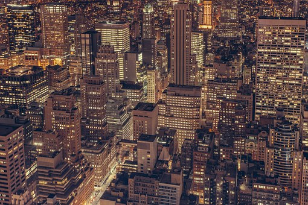

TRUE YORK CITY
Spring means the return of flowers, with cherry blossom viewing at Brooklyn Botanic Garden and the vibrant flora of the Macy's Flower Show; other familiar arrivals include the Tribeca Film Festival, now in its 17th year, and the Mets and Yankees season openers. Among the newcomers this season are a series of Rubin Museum exhibitions and events centered around the future; two Justin Timberlake performances at Madison Square Garden; a display of Stuart Weitzman's classic footwear at the New-York Historical Society; and a look at photographs that filmmaker Stanley Kubrick shot as a teenager in the 1940s. For details on these and many other spring happenings, read on.
